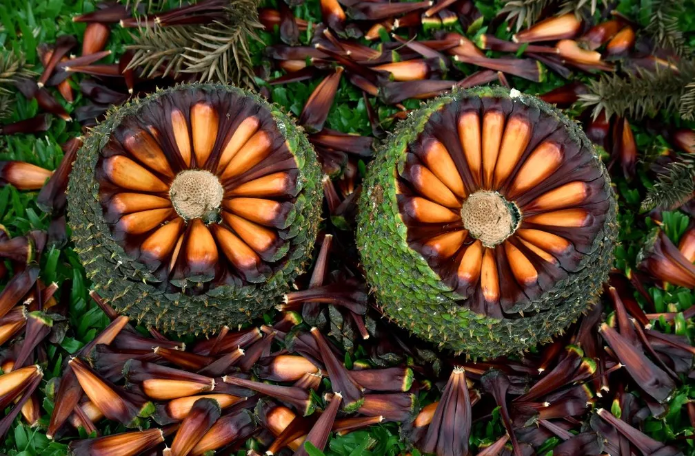
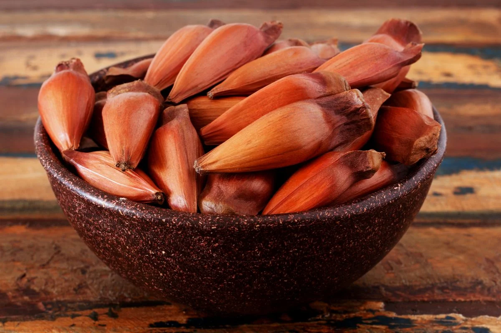
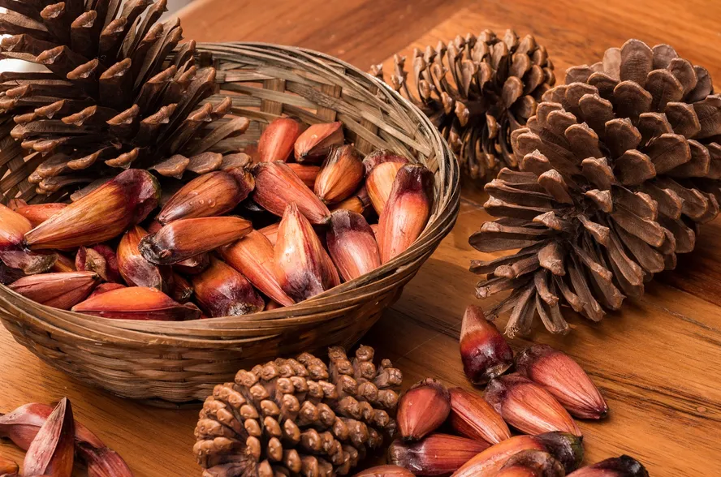

Como plantar um pinhão?
Para plantá-la, escolha um local ensolarado e com solo bem drenado. Coloque as sementes diretamente no solo, a uma profundidade de cerca de 5 cm. Durante o período de germinação, que leva de 60 a 90 dias, mantenha o solo úmido.
O que é um pinhão?
Pinhão é a designação genérica da semente de várias espécies de pinaceaes, plantas gimnospérmicas, isto é, cuja semente não se encerra num fruto. O pinhão se forma dentro de uma pinha, fechada, que com o tempo vai-se abrindo até liberar o pinhão.
De onde vem o pinhão?
Orgulhosamente brasileiro, o pinhão vem de uma árvore típica do Sul do país. A pinha é, na realidade, o verdadeiro fruto da araucária, onde o pinhão se forma. Uma estrutura redonda, fechada, que com o tempo vai se abrindo até liberar o pinhão.